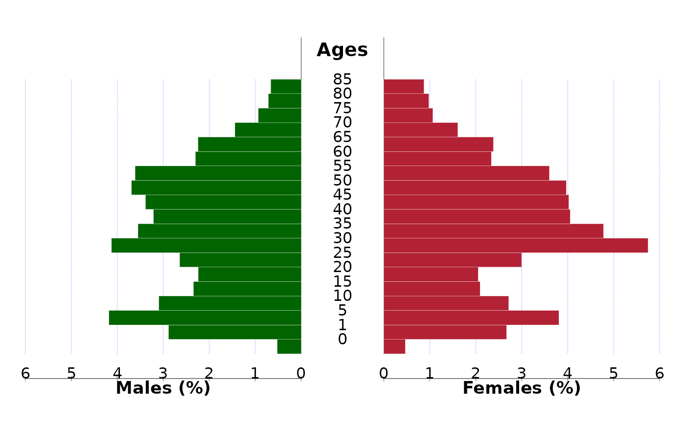

This function draws a population pyramid using either raw population numbers or proportions, displaying age groups in the center and population counts (e.g., by sex) on each side.
Usage
draw_pyramid(
data,
x,
y,
group,
facet = NULL,
facet_label = NULL,
grid = NULL,
show_value = FALSE,
show_prop = TRUE,
left_axis = NULL,
right_axis = NULL,
left_label = NULL,
right_label = NULL,
cgap = 0.3,
cstep = 1,
csize = 1,
labs = c("Males", "Ages", "Females"),
gl = 2,
cadj = 0,
cols = c("#006400", "#b32134"),
dens = c(-1, -1),
main = "",
...
)Arguments
- data
A data.frame containing the variables for age group (
x), population (y), and grouping variable (group, e.g., sex). It must contain at least three columns: age group (x-axis labels), population size, and grouping (e.g., "male" and "female").- x
A variable indicating age groups (quoted or unquoted).
- y
A variable indicating population counts (quoted or unquoted).
- group
A grouping variable, typically representing sex (quoted or unquoted).
- facet
Optional unquoted variable to facet the data by (e.g., year, region). A separate pyramid will be drawn for each unique value.
- facet_label
Optional character vector of labels for each facet. If
NULL, labels will be extracted from the unique values offacet.- grid
Optional vector of two integers specifying the layout of the facet grid (number of rows, number of columns). If
NULL, it defaults to a vertical stack (c(n, 1)fornfacets).- show_value
Logical. If TRUE, displays the actual population values beside the bars. Default is FALSE.
- show_prop
Logical. If TRUE, the bars represent proportions (%) rather than absolute values. Default is TRUE.
- left_axis
Numeric vector of tick marks for the left side (e.g., males). If NULL, it will be generated using
pretty().- right_axis
Numeric vector of tick marks for the right side (e.g., females). If NULL, it will use
left_axis.- left_label
Character vector to customize axis labels on the left side. If NULL, generated using
formatC().- right_label
Character vector for axis labels on the right side. Same rules as
left_label.- cgap
Numeric. Width of the central gap (relative to axis length). Default is 0.3.
- cstep
Integer. Step interval between age group labels. Default is 1 (every label shown).
- csize
Numeric. Scaling factor for text and lines. Default is 1.
- labs
A character vector of three labels: left side (e.g., "Males"), center (e.g., "Ages"), and right side (e.g., "Females"). Default is
c("Males", "Ages", "Females").- gl
Integer. Indicating the line type of the grids.
- cadj
Numeric. Vertical adjustment for center age labels. Default is 0.
- cols
A character vector of two colors for the left and right bars. Default is
c("#006400", "#b32134").- dens
A numeric vector indicating shading densities (lines per inch) for bars. Use -1 to fill solid bars. Default is
c(-1, -1).- main
A character string for the main plot title. Default is an empty string.
- ...
Additional graphical parameters passed to the base
plot()function.
Examples
data("canregs")
pop <- canregs[[1]]$POP
draw_pyramid(pop, agegrp, rks, sex)
